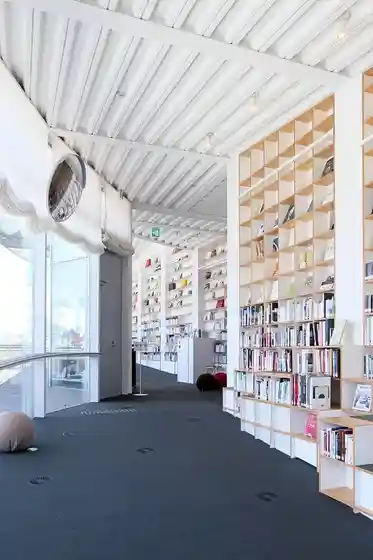
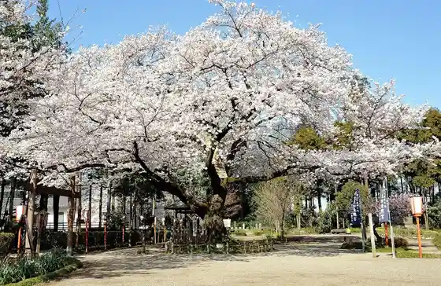
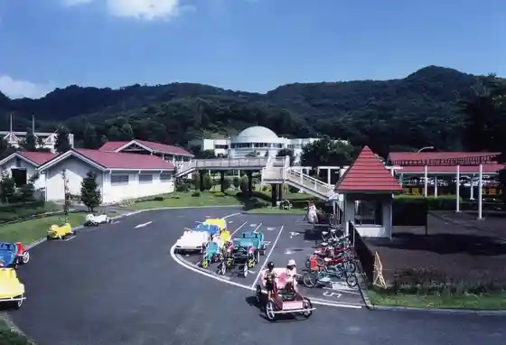

Kanayama Castle Ruins Castle Town
Otashi, Gunma · 0276-47-1833 · Official / source link
Otashi Art Museum Library
Otashi, Gunma · 0276-55-3036 · Official / source link

Sera Ta Toshogu
Otashi, Gunma · 0276-52-2045 · Official / source link

Yabu Tsuka Onsen Sato
Otashi, Gunma · 0276-47-1833 · Official / source link
Gunmakodomo no Kuni (Gunma Prefectural Kanayama General Park)
Otashi, Gunma · 0276-22-1448 · Official / source link

AGF Kanto (Kabu)
Otashi, Gunma · 0276-52-7100 · Official / source link
(Kabu) SUBARU Gunma Seisakusho
Otashi, Gunma · 0276-48-3101 · Official / source link
Hachioji Farm
Otashi, Gunma · 0276-37-0300 · Official / source link
Kan Inari Shrine
Otashi, Gunma · 0276-32-2500 · Official / source link
Kan Shio Numa
Otashi, Gunma · 0276-47-1833 · Official / source link
Yase Kawa
Otashi, Gunma · 0276-47-1833 · Official / source link
Shomei Tera (Han Town Yakatato)
Otashi, Gunma · 0276-57-0211 · Official / source link
Maruyama Kusurishi
Otashi, Gunma · 0276-20-7090 · Official / source link
Taikei Tera
Otashi, Gunma · 0276-57-1077 · Official / source link
Tsutsuji Yama Park
Otashi, Gunma · 0276-47-1833 · Official / source link
So Gen Tera Sazae Do
Otashi, Gunma · 0276-25-1343 · Official / source link
Tenjin Yama Burial Mound
Otashi, Gunma · 0276-20-7090 · Official / source link
Omitsu In
Otashi, Gunma · 0276-22-2007 · Official / source link
Roadside Station Ota
Otashi, Gunma · 0276-56-9350 · Official / source link
Japansuneku Center
Otashi, Gunma · 0277-78-5193 · Official / source link
Mikazuki Village
Otashi, Gunma · 0277-78-5321 · Official / source link
Danieruhausu
Otashi, Gunma · 0276-47-1222 · Official / source link
Nitta no Sho
Otashi, Gunma · 0276-37-4711 · Official / source link
Osumi Shunpei Art Museum
Otashi, Gunma · 0276-20-6855 · Official / source link
Mantoku
Otashi, Gunma · 0276-22-7921 · Official / source link
Nitta So History Museum
Otashi, Gunma · 0276-52-2215 · Official / source link
Enkiri Tera Mantoku Tera Museum
Otashi, Gunma · 0276-52-2276 · Official / source link
Kyu Nakajima Ie House
Otashi, Gunma · 0276-52-2235 · Official / source link
Kozan Hikokuro Memorial Museum
Otashi, Gunma · 0276-32-5632 · Official / source link
Kinryu Tera
Otashi, Gunma · 0276-22-4920 · Official / source link
Historic Site Kanayama Shiroato Gaidansu Shisetsu
Otashi, Gunma · 0276-25-1067 · Official / source link
Ikushina Shrine
Otashi, Gunma · 0276-20-7090 · Official / source link
Yugengaisha Ganso Donryu Yamada Ya Main Shop
Otashi, Gunma · 0276-47-3557 · Official / source link